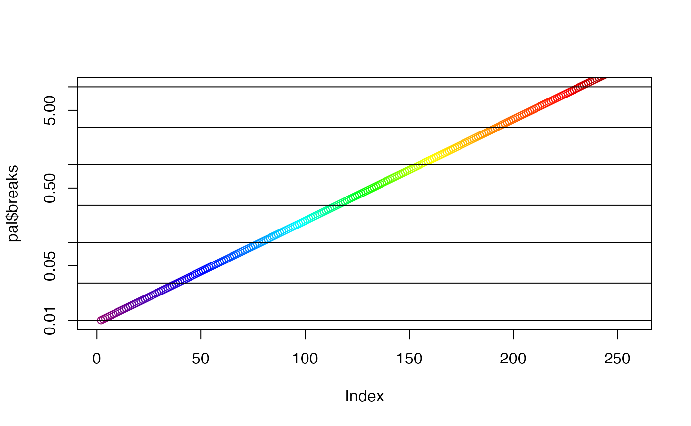
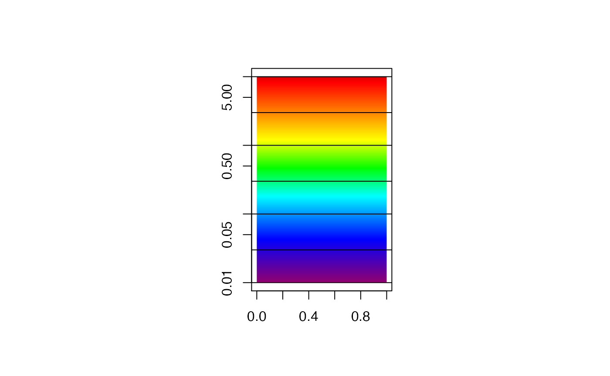

Chlorophyll-a colour scale: the SeaWiFS palette
2026-07-16
Source:vignettes/nasa_chla.Rmd
nasa_chla.RmdWe need to plot satellite remote sensing chlorophyll-a data with the NASA palette and a correct scale.
The R package palr contains a function to return the required colours and values, but it contains a large maximum value to account for large possible summary values.
We specify a maximum range on the values, and plot the scale in two different ways.
maxrange <- c(0.01, 10)
library(palr)
pal <- chl_pal(palette = TRUE)
sb <- which(pal$breaks >= maxrange[1] & pal$breaks <= maxrange[2])
plot(pal$breaks, col = pal$cols, log = "y", ylim = maxrange)
## select values from the NASA legend
abline(h = c(0.01, 0.03, 0.1, 0.3, 1, 3, 10))
op <- par(fig = c(0.3, 0.7, 0, 1));
plot(NA_real_, xlim = c(0, 1), ylim = maxrange, xlab = "", ylab = "", log = "y")
rasterImage(matrix(rev(pal$cols[sb])), 0, 0.01, 1, 10)
abline(h = c(0.01, 0.03, 0.1, 0.3, 1, 3, 10))
par(op)Compare these plots with the official NASA legend here.